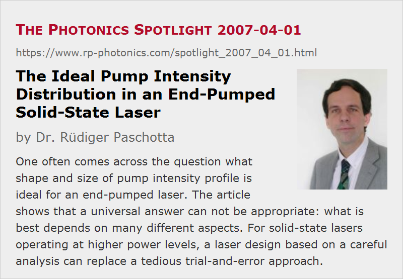

The Ideal Pump Intensity Distribution in an End-Pumped Solid-State Laser
Posted on 2007-04-01 as a part of the Photonics Spotlight (available as e-mail newsletter!)
Permanent link: https://www.rp-photonics.com/spotlight_2007_04_01.html
Author: Dr. Rüdiger Paschotta, RP Photonics Consulting GmbH
Abstract: One often comes across the question what shape and size of pump intensity profile is ideal for an end-pumped laser. The article shows that a universal answer can not be appropriate: what is best depends on many different aspects. For solid-state lasers operating at higher power levels, a laser design based on a careful analysis can replace a tedious trial-and-error approach.

Ref.: encyclopedia articles on end pumping, side pumping, thermal lensing, beam quality, resonator modes, mode coupling, and alignment sensitivity; R. Paschotta, “Beam quality deterioration of lasers caused by intracavity beam distortions”, Opt. Express 14 (13), 6069 (2006)
In the scientific and technical literature, one often comes across the question what shape and size of pump intensity profile is ideal for an end-pumped laser. The given answers vary quite substantially and sometimes even appear to be in outright contradiction with each other. I suppose that many people would like to know what the right answer is.
Here it is: it depends! I am sorry, but that's true, even if we consider only lasers with diffraction-limited (TEM00) output:
- As long as thermal lensing is weak, and the pump beam quality is sufficiently high, one can use a pump beam radius somewhat below the laser mode radius and easily obtain a diffraction-limited output. The precise pump beam shape doesn't matter very much.
- For high power lasers with a stronger thermal lens, one might even have to do the opposite: make the pumped area a bit larger than the laser mode. This way, the laser mode doesn't so strongly feel the aberrations of the thermal lens. (Spectra-Physics actually has a patent essentially on this method.)
- A close to rectangular pump profile is sometimes said to be better than a Gaussian profile. This is because aberrations of the thermal lens then occur only at the edge, which the smaller laser mode may not probe. However, the aberrations are then fairly strong at this point, and the laser mode intensity then really has to be small there. If it is too small, however, higher-order modes may start to oscillate. A somewhat smoother pump profile can be beneficial.
In this context, it can be important to understand how exactly aberrations influence the laser's beam quality: via mode coupling – see the paper cited above. Interestingly, this crucially depends not only on mode sizes in the laser crystal, but also on other properties of the resonator design.
So we see that a universal answer cannot be appropriate. To find out what is best in a concrete case will often require either a carefully worked out approach, based on the detailed understanding of the relevant physical issues, or an experimental trial-and-error approach which might be tedious and result in non-ideal performance or stability. There are, however, cases e.g. where only a low output power is required, and the design is not critical.
In any case, however, it is highly recommended to carefully check the pump intensity profile e.g. with a beam profiler even before building the laser resonator. By trying to save a little time at this point one may later on get into trouble e.g. with instabilities, and it takes much longer then to identify and cure the cause.
This article is a posting of the Photonics Spotlight, authored by Dr. Rüdiger Paschotta. You may link to this page and cite it, because its location is permanent. See also the RP Photonics Encyclopedia.
Note that you can also receive the articles in the form of a newsletter or with an RSS feed.
Questions and Comments from Users
Here you can submit questions and comments. As far as they get accepted by the author, they will appear above this paragraph together with the author’s answer. The author will decide on acceptance based on certain criteria. Essentially, the issue must be of sufficiently broad interest.
Please do not enter personal data here; we would otherwise delete it soon. (See also our privacy declaration.) If you wish to receive personal feedback or consultancy from the author, please contact him e.g. via e-mail.
By submitting the information, you give your consent to the potential publication of your inputs on our website according to our rules. (If you later retract your consent, we will delete those inputs.) As your inputs are first reviewed by the author, they may be published with some delay.
|  |
If you like this page, please share the link with your friends and colleagues, e.g. via social media:
These sharing buttons are implemented in a privacy-friendly way!